Gender Identities
Cisgender:
When a person is cisgender, they identify with the gender that matches the sex they were assigned at birth.
cis·gen·der
/sisˈjendər/
adjective
denoting or relating to a person whose sense of personal identity and gender corresponds with their birth sex.
Cis Man- A person who was born as male and identifies as a male.
Cis Woman- A person who was born as female and identifies as a female.
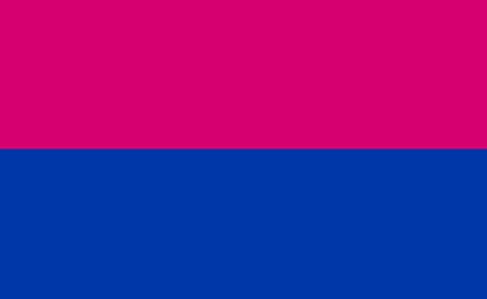
Questioning: The questioning of one’s gender is a process of exploration by people who may be unsure
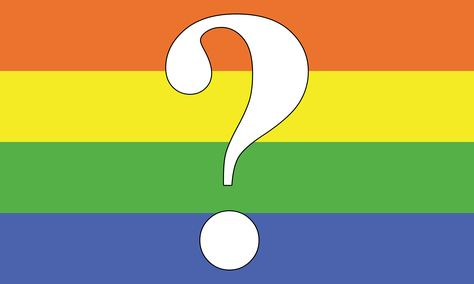
Transgender: People who are transgender are usually people who are born with male or female anatomies but feel as though they’ve been born in the “wrong body.” Transgender people will often “transition” to their gender with hormones, surgeries, and a name change.
trans·gen·der
/transˈjendər,tranzˈjendər/
adjective
denoting or relating to a person whose sense of personal identity and gender does not correspond with their birth sex.
Trans Man- A man who was assigned as female at birth. This is under the binary umbrella term because they have a set gender as a male.
Trans Woman- A woman who was assigned as male at birth. This is under the binary umbrella term because they have a set gender as a female.
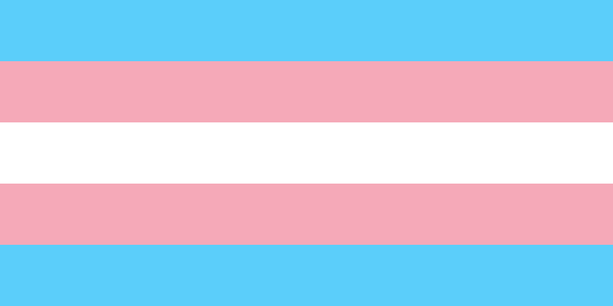
Non-binary: A non-binary person is someone who does not identify as exclusively a man or a woman. In simple terms, someone who is non-binary might feel like a mix of genders, or like they have no gender at all. Non-binary as a whole is an umbrella term.
non·bi·na·ry
/ˌnänˈbīnərē/
adjective
adjective: non-binary
not relating to, composed of, or involving just two things.
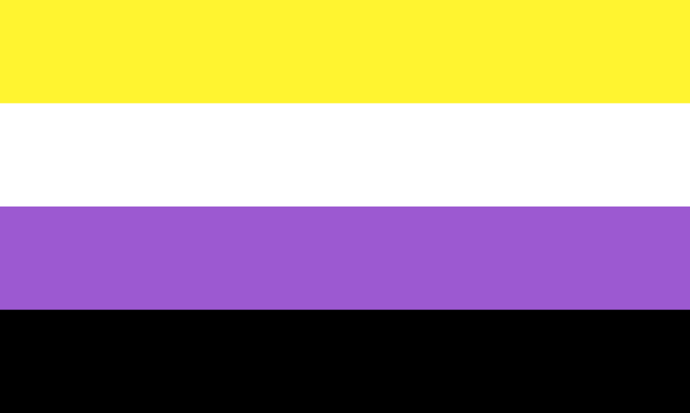
Gender Queer: In addition to being an umbrella term, genderqueer has been used to refer to any person who transgresses distinctions of gender, regardless of their self-defined gender identity, or who “queer” gender.
gen·der·queer
/ˈjendərˌkwir/
adjective
denoting or relating to a person who does not subscribe to conventional gender distinctions but identifies with neither, both, or a combination of male and female genders.
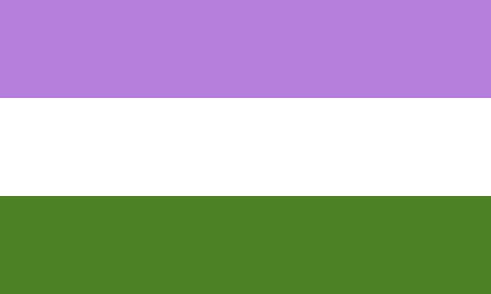
Gender Fluid: A person who is gender fluid prefers to remain flexible with their gender, rather than committing to a single gender. They may fluctuate between genders or express multiple genders at the same time.
gen·der-flu·id
adjective
denoting or relating to a person who does not identify themselves as having a fixed gender.
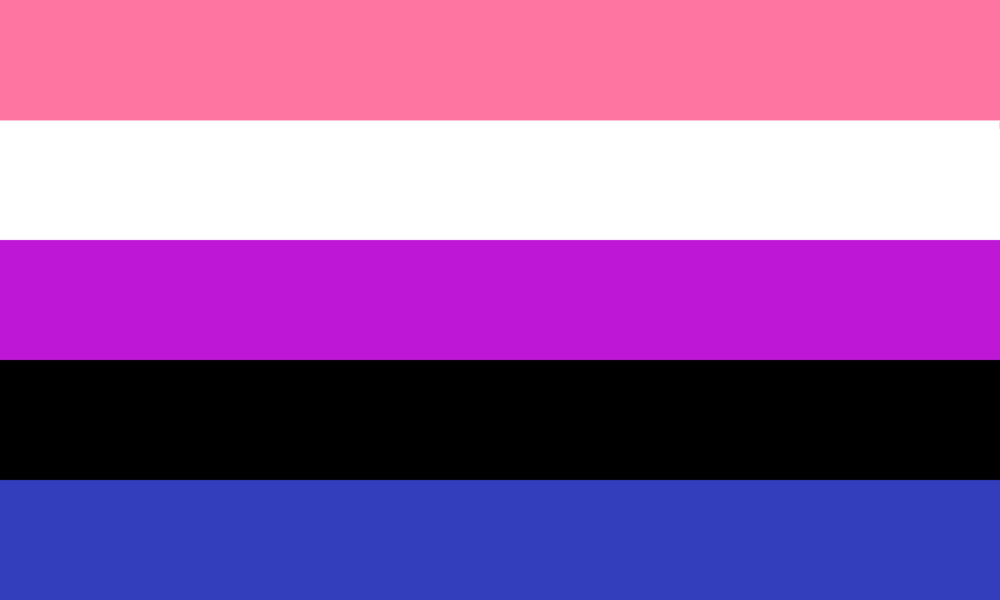
Bigender: A gender identity that includes any two gender identities and behaviors. Some bigender individuals express two distinct personas, which may be masculine, feminine, agender, androgynous, or other gender identites; others find that they identify as two genders simultaneously.
bi-gen·der
adjective
denoting or relating to a person whose sense of personal identity encompasses two genders.
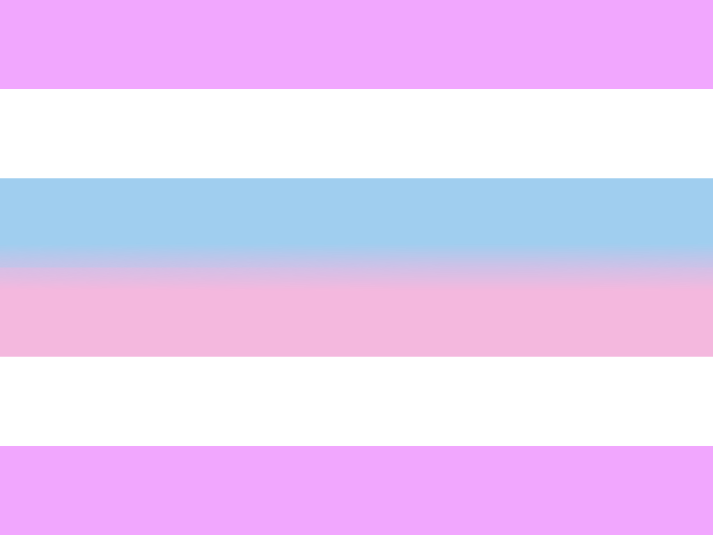
Pangender: A gender identity that is defined as being more than one gender. A pangender person may consider themselves a member of all genders.
pan-gen·der
adjective
denoting or relating to a person whose sense of personal identity encompasses the entirety of the gender spectrum.
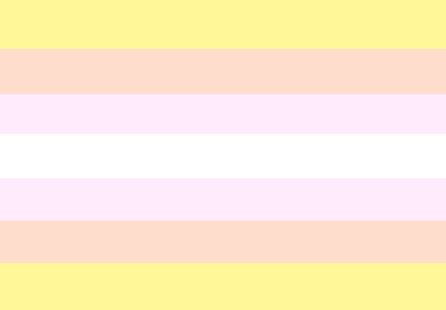
Intergender: A non-binary gender indentity used most commonly by intersex people. It describes someone who feels in-between male and female or you could say neutral.
inter-gen·der
adjective
denoting or relating to a person who identifies between male and female.
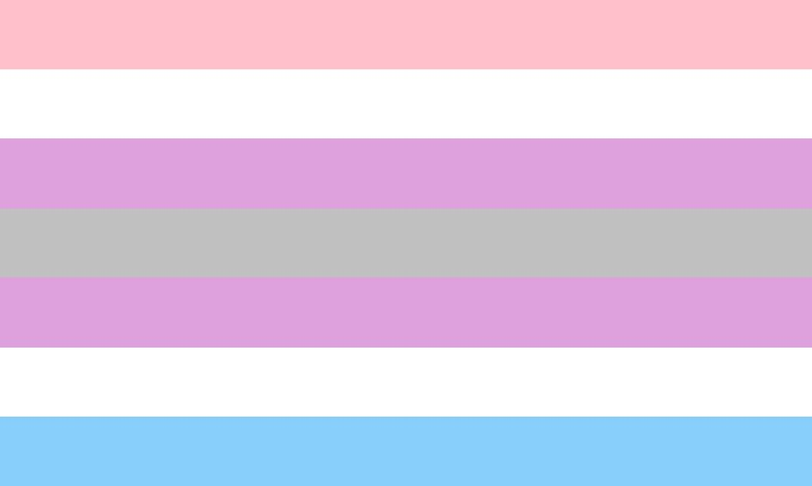
Agender: A person who is Agender, refers to themselves as not having a gender. It can be seen either as a non-binary gender identity or as a statement of not having a gender identity.
a·gen·der
/āˈjendər/
Adjective
denoting or relating to a person who does not identify themselves as having a particular gender.
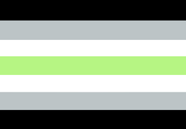
Sexualities
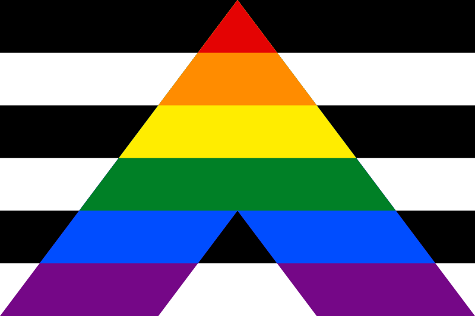
Heterosexual:
/ˌhedərəˈsekSH(o͞o)əl/
adjective
1.
(of a person) sexually attracted to people of the opposite sex.
homosexual:
/ˌhōməˈsekSH(o͞o)əl/
adjective
1.
(of a person) sexually attracted to people of one's own sex.
Someone who is homosexual is attracted to or interested in people of the same gender.
Gay:
/ɡā/
adjective
1.(of a person) homosexual (used especially of a man).
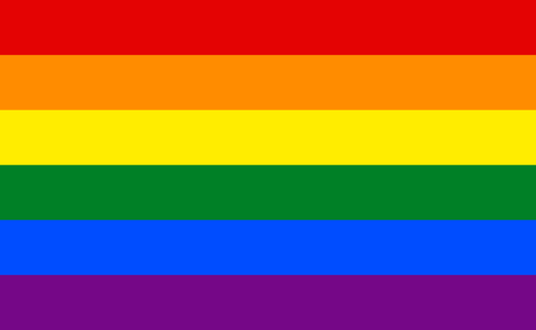
The word gay is used to reference a man who is attracted to other men.
Lesbian:
/ˈlezbēən/
Noun
1. a homosexual woman.
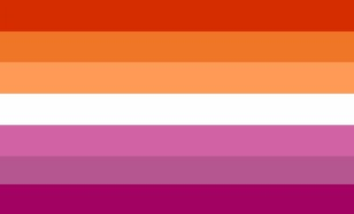
A lesbian is a woman who is attracted to other women.
Bisexual:
/ˌbīˈsekSH(o͞o)əl/
Adjective
1. sexually attracted not exclusively to people of one particular gender; attracted to both
men and women
Bisexuality references a person who is attracted to both men and women. Though
Bisexual people may be attracted to both men and women, they may not be attracted to
both equally.
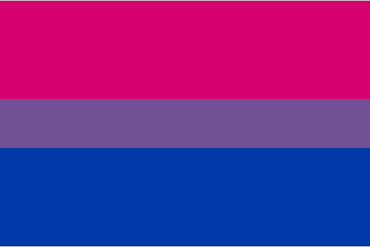
Asexual:
/āˈsekSH(o͞o)əl/
Adjective
1. without sexual feelings or associations.
"asexual individuals may still experience attraction but this attraction doesn't need to be realized in any sexual manner"
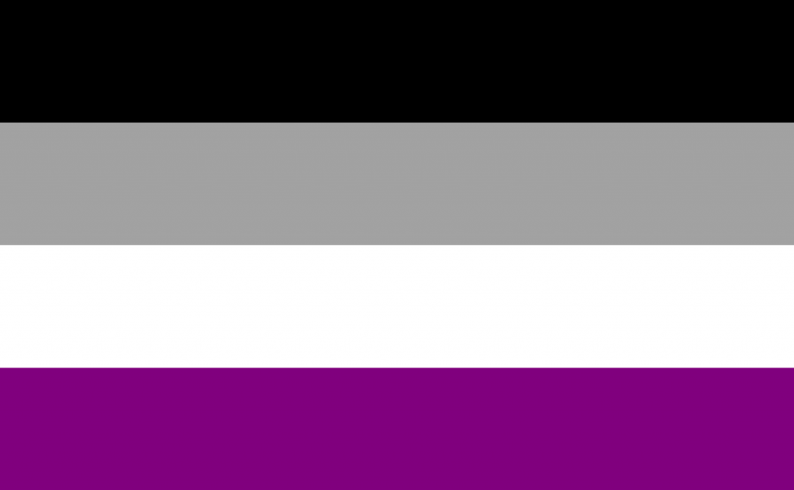
Asexual people experience little to no sexual attraction to others, though that does not
mean they cannot be romantically attracted to someone or in a successful romantic
relationship.
Demisexual:
Similar to asexuality, people who identify as demisexual experience little to no sexual
attraction to other people, however, unlike those who identify as asexual, demisexuals
can experience sexual attraction to those they have some level of emotional knowledge or connection to.
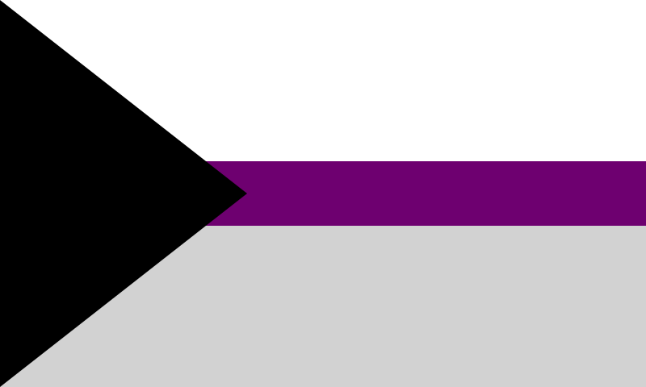
Pansexual:
/panˈsekSH(əw)əl/
Adjective
1. not limited in sexual choice with regard to biological sex, gender, or gender identity.
Pansexual people are attracted to all gender identities, meaning that gender is not a
factor when it comes to those who identify as pansexual. This, however, does not mean
that pansexuals are attracted to all people, it simply means that they can be attracted to
people of any gender identity.
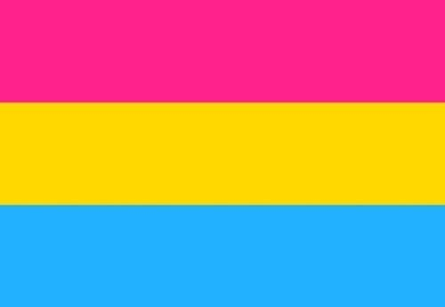
Queer:
Some one who is queer does conform to traditional sexualities or gender norms. The
word queer has many meaning, but this is the simple definition.
Questioning:
While ‘questioning’ isn’t a defined sexual orientation, it is used to describe those who are
“questioning” their sexuality, or who are not sure how they identify and are still trying to
figure it out.